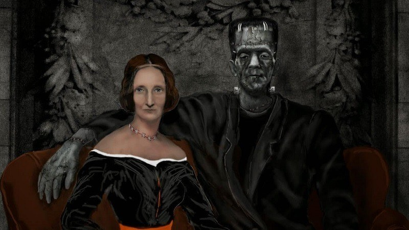

Escritora
Mary Wollstonecraft Shelley
Biografia
Mary Shelley nació como Mary Wollstonecraft Godwin en Somers Town, Londres, en 1797. Fue la segunda hija de la filósofa y escritora feminista Mary Wollstonecraft y la primera hija del filósofo, novelista y periodista William Godwin, La madre de Mary falleció de una infección posparto tras darla a luz, Godwin dio a su hija una educación que la alentó a adherirse a las teorías políticas liberales. Asimismo, Mary Godwin leyó los escritos autobiográficos y los libros de su madre, lo que incrementó la veneración que sentía por su memoria.
Las obras más importantes de Mary Shelley
- Frankenstein (Frankenstein, o el Moderno Prometeo) (1818)
- El ultimo hombre (1826)
- Mathilda (1819-1820)
- Valperga (1823)
- La suerte de Perkin Warbeck: un romance (1830)
- Lodore (1835)
- Falkner (1837)
Familia
Cónyuge:
- Percy Bysshe Shelley (1816-1822)
Hijo:
- Percy Florence Shelley